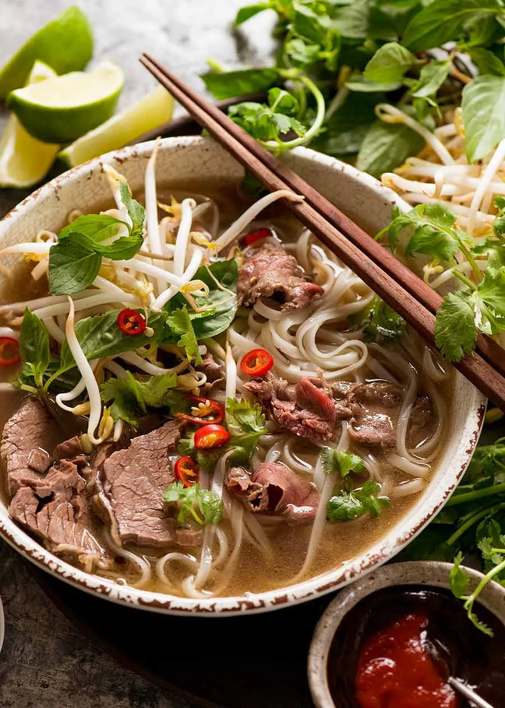

Pho
Home

Description
If you’re wondering “What is Pho?” then you’re probably also wondering “Why is she so bonkers over it???”
I don’t blame you. It looks like a relatively harmless bowl of beef noodle soup.
That is, until you take your first slurp. The Pho soup broth is everything. It’s light yet full of flavour, deceptively beefy, savoury, complex, has the tiniest
hint of richness and is filled with beautiful spices like cinnamon. It is, without question, one of The Best Soups in the whole world!
Ingredients
- Chicken/beef broth
- Yellow onion and fresh ginger
- Spices: round coriander, cloves, fish sauce, hoisin sauce, soy sauce, red chili paste, cinnamon, salt and pepper.
Steps
- Begin by charring ginger and onion over an open flame until they are slightly blackened
- Add beef bones, charred ginger, charred onion, and condiments in a large water pot
- Boil the pot, then reduce the heat and let it simmer for several hours
- Remove the fat that rises to the surface during the simmering process
- Remove the bones, spices, ginger, and onion from the broth until you have a clear and flavorful Pho broth
- Adjust the seasonings by adding fish sauce and salt to taste